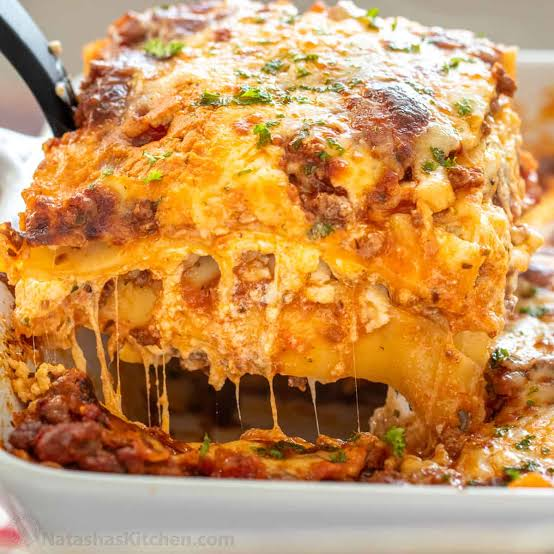

Lasagna Recipe

Ingredients
- lasagna sheets
- 500 g minced beef
- 1 onion
- 1 can tomato sauce
- 1 cup of grated cheese
- Salt and pepper
Method
- Fry the onion and minced beef until browned.
- Add tomato sauce, salt and pepper. Simmer for 10 minutes.
- Place lasagna sheets in a baking dish.
- Add meat sauce and cheese.
- Repeat the layers.
- Bake at 180°C for 35–45 minutes, or until the pasta is cooked.
- Allow to cool slightly, slice and serve.